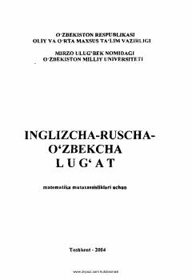

ILMatematika sohasidagi inglizcha atamalarning ruscha va o'zbekcha izohli lug'ati.
Ushbu lug'at oliy o'quv yurtlari talabalari, magistrlar va o'qituvchilar uchun mo'ljallangan bo'lib, matematik matnlarda ko'p uchraydigan so'z va iboralarni o'z ichiga oladi. Kitob inglizcha matematik atamalarni rus va o'zbek tillariga tarjima qilishda yordamchi qo'llanma sifatida xizmat qiladi.